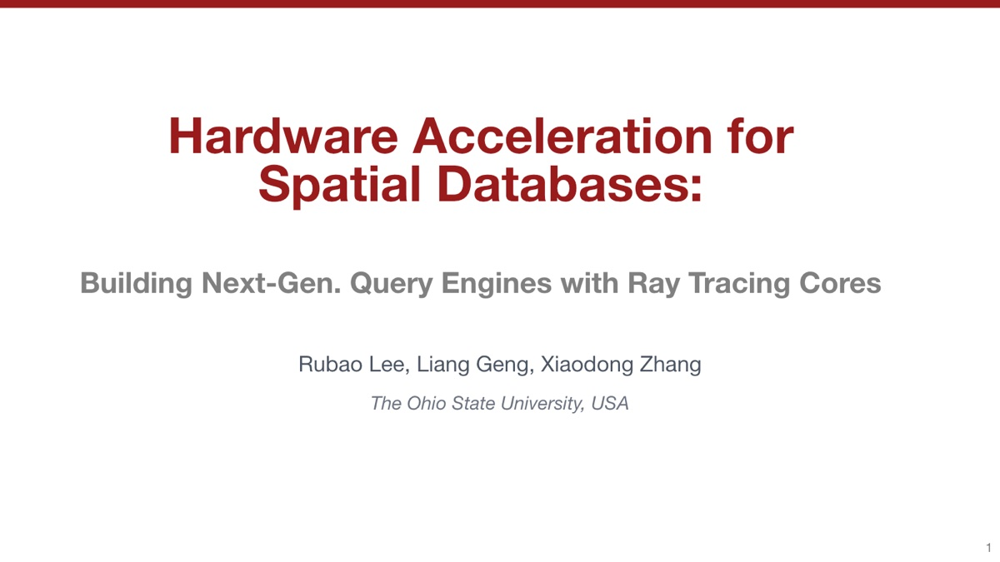
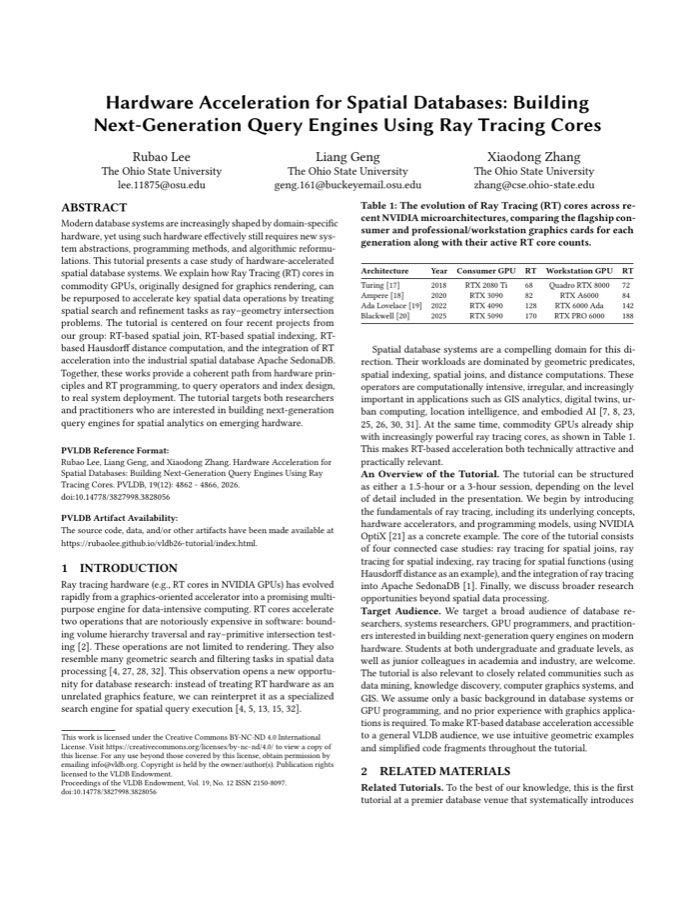

Presentation
Complete tutorial slides
The full teaching deck, covering ray tracing fundamentals and four connected spatial database case studies.
VLDB 2026 · Tutorial Materials
Building next-generation query engines with ray tracing cores - from hardware fundamentals and spatial operators to indexing, distance computation, and a full integration with Apache SedonaDB.
Start with the slides for the complete tutorial narrative, or read the concise paper for the motivation, design space, and related systems.

The full teaching deck, covering ray tracing fundamentals and four connected spatial database case studies.

A compact overview of the tutorial scope, audience, case studies, learning goals, and supporting materials.
Modern database systems are increasingly shaped by domain-specific hardware, but effective use of that hardware requires new abstractions, programming methods, and algorithmic reformulations. This tutorial explains how ray tracing cores in commodity GPUs can be repurposed to accelerate spatial data operations by treating search and refinement tasks as ray-geometry intersection problems.
Four connected case studies create a path from hardware principles and ray tracing programming, through query operators and index design, to deployment in an industrial spatial database. The emphasis is not only on performance, but on the systems lessons behind making a specialized accelerator useful to database developers.
The material moves from first principles to a production-oriented system, with each section building on the same ray-based view of spatial processing.
RT cores, BVH traversal, the rendering pipeline, and NVIDIA OptiX.
Line-segment intersection, point-in-polygon, and limited-precision challenges.
Point and range queries, updates, mutability, and load balancing.
Hausdorff distance as a case study in RT-accelerated spatial computation.
Engineering a GPU-friendly spatial engine and integrating acceleration end to end.
What generalizes, what remains difficult, and where the research can go next.
The tutorial is grounded in open implementations. Use these repositories to reproduce results, inspect the engineering, or build on the ideas.
Ray tracing acceleration for spatial joins, including line-segment intersection and point-in-polygon.
A spatial indexing library built on ray tracing hardware.
Fast Hausdorff distance computation with ray tracing cores.
The GPU spatial library and integration path used by Apache SedonaDB.
The tutorial brings together the researchers behind the systems and the broader hardware-conscious data management research program.
Senior Research Scientist
The Ohio State University
Ph.D. Candidate
The Ohio State University
Professor
The Ohio State University
Rubao Lee, Liang Geng, and Xiaodong Zhang. "Hardware Acceleration for Spatial Databases: Building Next-Generation Query Engines Using Ray Tracing Cores." PVLDB 19(12): 4862-4866, 2026.